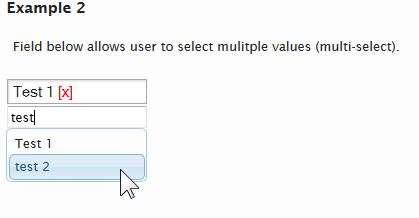
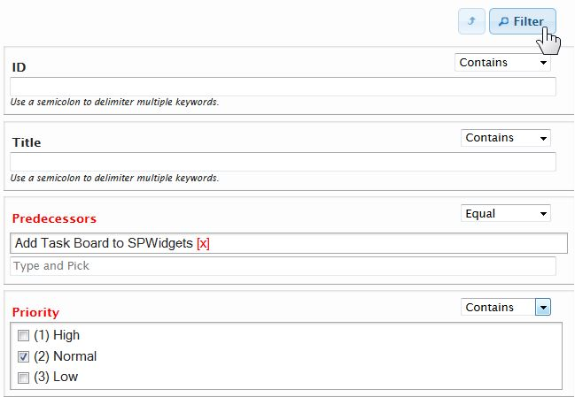
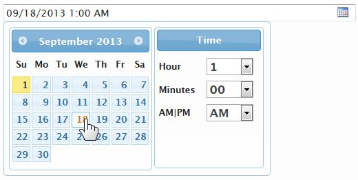

SPWidgets
SharePoint Custom UI Widgets
View the Project on GitHub purtuga/SPWidgets
Widget List
About
SPWidgets is a jQuery plugin that provides SharePoint Widgets that can be used for creating customized User Interfaces (UI) on the SharePoint platform using Client Side scripting (javascript).
For the latest information on this plugin, see the project page on GIT.
Demo Showcase
Want to try them now and not worry about installation/setup etc. A self contained Single Page Application (SPA) is available that you can quickly upload to a Sharepoint library and see the widgets in action. GO HERE for more information.
Dependencies
SPWidgets has the following dependencies:
Usage
The following is an example that loads the required libraries from CDN's, the SPWidgets from the local site and then initiates the People Picker plugin on an input field inside a jQuery UI dialog.
<link rel="stylesheet" type="text/css" href="http://ajax.googleapis.com/ajax/libs/jqueryui/1.8.18/themes/redmond/jquery-ui.css" />
<script type="text/javascript" src='https://ajax.googleapis.com/ajax/libs/jquery/1.6.4/jquery.min.js'></script>
<script type="text/javascript" src='https://ajax.googleapis.com/ajax/libs/jqueryui/1.8.18/jquery-ui.min.js'></script>
<script type="text/javascript" src='yoursite/path/to/jquery.SPWidgets.js'></script>
<script type="text/javascript">
$(document).ready(function(){
$('<div> <input name="users" value="" /> </div>')
.appendTo("body")
.find("input")
.pickSPUser()
.end()
.dialog();
});
</script>
License
Dual License support
User can pick whichever one applies best for their project and does'nt not have to contact me.
Author
Paul Tavares @purtuga
Follow me at Twitter @paul_tavares
Version
- Version: 20140824024732
- Build Date: Paul:August 24, 2014 02:47 PM
Install
SPWidgets requires jQuery and jQuery UI libraries. These should be included or loaded first. There is only 1 SPWidgets file required to be included in the page. This file can be located in the plugin folder of the downloaded archive (zip, tar). There are two versions of it:
- jquery.SPWidgets.js
The un-minified version of SPWidgets, normally used for debugging during development cycle. - jquery.SPWidgets.min.js
The minified version of SPWidgets, usually the preferred version for production environments.
Include only one of the above reference files:
<script type="text/javascript" src='yoursite/path/to/jquery.SPWidgets.min.js'></script>
pickSPUser Widget
Given an input field, this method will display an interface that allows the users to select one or more users from SharePoint and stores the selected user information into the input field in the format expected when making an update via webservices.
The input field will be hidden in its current position and a UI will displayed instead. As the user picks or removes users, the input field will be updated at the same time, thus it will always be ready to be submitted as part of an update to the server.
Usage
$("input[name='users']").pickSPUser();
Input Parameters
This method takes as input an object containing the options below. These can also be set globally by setting them on $.SPWidgets.defaults.peoplePicker.
allowMultiples : Boolean. Optional. Default=true.
Determine whether multiple users can be picked.maxSearchResults : Integer. Optional. Default=50.
The max number of results to be returned from the server.resolvePrincipals : String. Optional. Default=true
When set to true (default), any person/group selected in the people picker that is not yet resolved (has -1 for ID and thus not part of Site List Info list) will be resolved first. Note that if setting this to false, could cause issues if attempting to update a people field on a list with a user that is not resolved. (Since v.2.3)type : String. Optional. Default='User'
The type of search that should be done. This input parameter is used as the underlying webservice PrincipalType value. Possible values include User, DistributionList, SecurityGroup, SharePointGroup, All, None. Default value is User.Example: Initiate a people picker that selects only Groups
$("input[name='team']").pickSPUser({ type: 'SharePointGroup' });minLength : Integer. Optional. Default=3.
The number of characters the user must type before suggestions are retrieved and displayed.appendTo : selector. Optional. Default=null
The container where the autocomplete suggestions should be appended to. Default is inside of the People Picker widget container. See jQuery UI's Autocomplete for more on this options.webURL : String. Optional. Default=current site
The WebURL for the list. (Since v2.1)onPickUser : Function. Optional. Default=null.
Function that is called when user makes a selection. Function will have a context (this keyword) of the input field to which this plugin was bound, and will be given one input param; an object containing information about the selection made by the user. This object will contain data returned by the SharePoint's webservice.Example:
onPickUser: function(personObj) { // this = input element alert(personObj.displayName + " was selected!"); }onCreate : Function. Optional. Default=null.
Function that is called after the widget has been initiated on an input element. Function will have a context (this keyword) of the input field to which this plugin is called on, which will also be provided as the first argument to the function. (Since v2.1)Example:
onCreate: function($input){ // this = input element }onRemoveUser : Function. Optional. Default=null.
(Since v2.1) Function that is called when user makes removes a person from the selected list. Function will have a context (this keyword) of the input field to which this plugin was bound, and will be given the following two input parameters:- Original Input field as jQuery object
- The UI of the person (as jQuery object)
- An object with data about the user that was selected
Returning a (boolean) false will cancel the removal of the person from the selected list.
Example:
onRemoveUser: function($input, $ui, personObj) { // this = input element // return false; // will cancel removal }filterSuggestions : Function. Optional. Default=null
A callback function to be used to filter the list of suggestions retrieved from the server. Method, if defined, must return an array (either empty or of Objects). (Since 2.4);inputPlaceholder : String. Optional. Default=Type and Pick.
The text to appear in the HTML5 placeholder attribute of the input field. Since v2.1.meKeyword : String. Optional. Default=[me]
The keyword used to represent the current user. When the user types this keyword, an additional suggestion is added to the autocomplete titled 'Current User' (value is configurable. See option below). This suggestion, when selected by the user, will use sharepoint's <ThisUser/> keyword instead of an ID;#name format and thus can be used to accomodate a dynamic setting based on the user using the widget. (Since v.2.3)meKeywordLabel : String. Optional. Default=Current User
The label to be shown on the suggestion box or selected list of user when using the [me] keyword. (Since v.2.3)
Return Value
This plugin will return a jQuery object that contains the initially selected set of node, thus maintaining chainability.
Utilities
$().pickSPUser.resolvePrincipals(options)
A utility to resolve user accounts that may not be part of the site collection list info table. This is normally needed when a user's ID is -1: meaning the user is valid, but not part of the site collection (yet). By calling this method and setting the addToUserInfoList input option to true, that user will be added and receive a valid (positive) ID. (Since v.2.3)
Input parameters
- options An object with the input options. See below for list of options
Options
principalKeys : String|Array. REQUIRED
The account name, or email address of the principal to be resolved. Example: DOMAIN\userloginname.principalType: String. Optional. Default=All
The type of principal to be resolved. Valid values are: User, DistributionList, SecurityGroup, SharePointGroup, All, None. Default is All.addToUserInfoList: Boolean. Optional. Default=true
If true, then user will be added to site's List Info list.aysnc: Boolean. Optional. Default=true
If true, request to the server will be done async.
Return
Method returns a jQuery Promise (the one from $.ajax()). The promise (if successful) will provide its callback 3 input parameters: data (the xml response document), textStatus and the jQuery XHR request.
Example:
$().pickSPUser.resolvePrincipals({
principalKey: "DOMAIN\PAUL"
})
.done(function(xmlDoc, textstatus, jqXHR){
var $doc = $(xmlDoc);
alert($doc.find("DisplayName").eq(0).text());
});
Methods
All methods are called using the original input element where the People Picker widget was bound with the word 'method' as the first parameter:
$("input[name='user']").pickSPUser("method", "method name here");
The following methods are supported:
clear()
Clears out all selected peopleExample:
$("input[name='user']").pickSPUser("method", "clear");destroy()
(Since v2.0) Removes the widget from the bound input element.Example:
$("input[name='user']").pickSPUser("method", "destroy");add('id;#name')
(Since v2.1) Adds a person to the seletion list. Method accepts one input:- {String} A string with people to add in the format of id;#name
Example:
$("input[name='user']").pickSPUser("method", "add", '4;#John Smith');remove(id)
(Since v2.1) Removes a person from the selection. Method accepts 1 input paramater.- {String} The ID or Display Name of the person that should be removed.
Example:
// Remove person with ID of 4 $("input[name='user']").pickSPUser("method", "remove", 4); // remove John Smith $("input[name='user']").pickSPUser("method", "remove", "John Smith");getSelected()
(Since v2.1) Returns an Array of objects representing the currently set of selected people. The array object element will have the following structure:[ { id: 'id of person', title: 'display name of person' } ]Example:
var selected = $("input[name='user']").pickSPUser("method", "getSelected"); alert("There are " + selected.length + " people selected!");
Events
The following Events are triggered by this widget
spwidget:peoplePickerCreate
(Since v2.1) Event is triggered after widget is initiated on an element. Event is given two input parameters:- jQuery Event Object
- Original Input field as jQuery object
Example:
$("input[name='user']") .on("spwidget:peoplePickerCreate", function(ev, $input){ // ev.target = input element }) .pickSPUser()spwidget:peoplePickerAdd
(Since v2.1) Event is triggered anytime the user selects a person/group. Event is given three input parameters:- jQuery Event Object
- Original Input field as jQuery object
- An object with data about the user that was selected
Example:
$("input[name='user']") .on("spwidget:peoplePickerAdd", function(ev, $input, personObj){ // ev.target = input element }) .pickSPUser()spwidget:peoplePickerRemove
(Since v2.1) Event is triggered anytime the user removes a person/group from the selected list. Returning False (Boolean) will canceld the removal and leave the person in the selected list. Event is given three input parameters:- jQuery Event Object
- Original Input field as jQuery object
- An object with data about the user that was selected
Example:
$("input[name='user']") .on("spwidget:peoplePickerRemove", function(ev, $input, personObj){ // ev.target = input element }) .pickSPUser()
Examples
Bind people picker and allow only 1 person to be selected/stored.
$("input[name='users']").pickSPUser({
allowMultiples: false
});
When user makes a selection, show alert with person's info.
$("input[name='users']").pickSPUser({
onPickUser: function(person){
alert("User selected:
displayName: " + person.displayName + " accountId: " + person.accountId + " accountName: " + person.accountName + " accountType:" + person.accountType); } });
SPControlUpload Widget
jQuery plugin that inserts a widget into page for uploading a file to a SharePoint Document Library without having to leave the page that the user is currently on. This plugin provides a behavior similar to an async ajax call.
At its core, this plugin is simply uses the default SharePoint upload.aspx page inside an iframe, but manipulating it from the hosted page, so that the user is shown only a minimalist UI. Code hooks are provided for allowing a developer to further manipulate the page(s) that may be shown after the initial upload (ex. some libraries require users to fill in additional information and then check in the document. This can all be automated without user input.)
In a normal flow, the upload process follows this sequence:
- Display upload form. User selects a file for upload and presses the upload button.
- File is uploaded to the server and depending on the setup, a check in page may be displayed.
- File is checked in and file upload is complete. Page is redirected to display/list view.
Usage
$("div.file_upload").SPControlUpload({ listName: "Shared Documents" });
Input Parameters
This method takes as input an object containing the following options:
$("div.file_upload").SPControlUpload({
listName: '',
folderPath: '',
uploadDonePage: '/undefined',
onPageChange: null,
onUploadDone: null,
uploadUrlOpt: '',
overwrite: false,
uploadPage: '',
overlayClass: '',
overlayBgColor: 'white',
overlayMessage: '<div>Working on it</div>',
selectFileMessage: "Click here to select file...",
uploadDoneMessage: "Upload Successful!",
fileNameErrorMessage: "A file name cannot contain any of the following characters: \ / : * ? \" < > | # { } % ~ &",
noFileErrorMessage: "No file selected!",
checkInFormHeight: '25em',
webURL: currentSiteUrl
});
The default options for this widget can be manipulated/set via the following object:
$.SPWidgets.defaults.upload = {}
Options
listName : String. REQUIRED.
The name or UID of the Document Library to where this files will be uploaded. This value is used in conjuction with the folderPath parameter.Example:
'Shared Documents'or
'{67587-89284-93884-78827-78823}'webURL : String. Optional. Default="currentSiteUrl"
The url of the Site or Sub-site to where the file will be uploaded.folderPath : String. Optional. Default="/"
The path to the folder inside of the Document Library where the document should be uploaded to. Value can be either relative to the document library root or absolute. Default is to place the document at the root of the Document LibraryExamples:
'http://yourdomain.com/sites/site1/Shared Documents'or
'/sites/site1/Shared Documents'onUploadDone : Function. Optional. Default=null.
Triggered when file is successfully uploaded - or when it reaches the uploadDonePage. This function is triggered after a file is checkedIn (if library requires it to be checked in). Function will have a scope of the element used on input and be given 1 parameter: An object with the upload file metadata. New with v2.2onPageChange : Function. Optional. Default=null.
Function that is called each time the state of the upload changes. The function scope (this) points to the element that was used when this method was called. The function is given one param - the event object created by this plugin that includes information about the state of the upload. See Event Object below for more information.Return value of this function will control flow of plugin. Returning true (boolean), will allow processing to continue at different stages (see the event object below), while returning false (boolean) will stop flow from continuing. The check is strict; meaning that it has to be a boolean false in order for flow to stop.
onPageChange: function(ev){ // this=original $(selector) // so some processing return true; // allow form to proceed. }uploadUrlOpt : String. Optional. Default="".
String of data that should be appended to the upload page url as search parameters. This string value is assumed to have already been properly escaped for use in the url.
NOTE: The option MultipleUpload is NOT SUPPORTED.overwrite : Boolean. Optional. Default=False.
True or False indicating if document being uploaded should overwrite any existing one. Default is False (don't overwrite)overlayClass : String. Optional. Default="".
A css class to be associated with the overlay that is displayed over the iframe while loading of the page is going on.overlayBgColor : String. Optional. Default="white".
A color to be used for the overlay area that is displayed over the iframe wile loading of the page is going on. Default is white. Set this to null if wanting only to use a class.checkInFormHeight : String. Optional. Default="25em"
The height of the displayed Form that is displayed when a file required CheckIn. The form is displayed after the file has been uploaded to the document library. The display of the form does not impact the layout of the page (it is displayed using position:absolute). New with v2.2overlayMessage : String|HTMLElement|jQuery. Optional. Default="Working on it".
String or object/element to be displayed inside of the overlay when it is displayed.selectFileLabel : String. Optional. Default="Click here to select file..."
The label to display when no file is selected. New with v2.2uploadDoneMessage : String. Optional. Default="Upload Successful!"
Message to display when file upload is completed. New with v2.2fileNameErrorMessage : String. Optional. Default="The file name is invalid or the file is empty. A file name cannot contain any of the following characters: \ / : * ? \" < > | # { } % ~ &"
Error to display when file name is invalid (ex. contains unsupported characters). New with v2.2noFileErrorMessage : String. Optional. Default=""
Error to display when no file is selected (but user clicks Upload). New with v2.2uploadDonePage : String. Optional. Default="/undefined".
The url of the page that should be loaded after the file has been uploaded successful. Under normal use, there should be no need to change the default on this input parameter, and it may be depricated in the future.uploadPage : String. Optional. Default="/_layouts/Upload.aspx".
The relative URL from the WebSite root to the upload page. Default is "/_layouts/Upload.aspx". This value is appended to to the website full url. Parameter should, in normal conditions, not be changed and it may be depricated in the future.
Event Object
The function defined for the onPageChange input parameter will receive as input an event object generated by this plugin. The object will contain information about the state of the upload process.
The following attributes can be found in the event object:
ev.state : Integer. 1|2|3
A value from 1 through 3 that represents the state of the phisical file. This value, along with the ev.action value can be used to validate user input and if appropriate, cancel the send request to the server.No File uploaded. Upload form is ready for user input. This is set when the form is initially loaded and the File html element is ready for the user to attach the file.
No File uploaded. User has defined a file for upload and form is now ready to be submitted to the server. This state could be used in the onPageChange to (for example) prevent the upload of certain file types. See example below.
File has been uploaded and is now available on the server (note that it may not be checked in yet). This state is set when the user has successfully uploaded the file to the server and no errors were encountered (example invalid file characters). This state will remain through subsequent pages if the file requires check in.
ev.action : String. preLoad|postLoad
The event action as it pertains to this plugin. Use this value in conjuction with the ev.state to do additional validations on user input.preLoad
Action is taking place before the page is sent to the server. The user (or code) must have initiated an action that requires sending data to the server.
postLoad
Action is taking place after page has completed loading, but is not yet visible to the user.
ev.hideOverlay : Boolean. Default=true.
Used when action=postLoad. Can be set by a callback function to false, so that the busy overlay remains displayed and is not automatically hidden.ev.pageUrl : String.
The url of the page currently loaded in the iframe.ev.page : jQuery Object.
An object representing the page loaded inside the iFrame. This can be used to further manipulate the iframe's page content.ev.isUploadDone : Boolean.
Indicates if the upload process is done. Basically, this means that the processes has reached the page defined in the updatePageDone parameter.ev.file : Object.
An object that contains the metadata for the file that was successfuly uploaded. This event attribute is only populated with data once the file is uploaded to the server.
Return Value
This plugin will return a jQuery object that contains the initially selected set of node, thus maintaining chainability.
Examples
Example 1
Simple example. Upload a file to the Share Documents library and display an alert when complete.
$("#uploadContainer")
.SPControlUpload({
listName: 'Shared Documents',
onUploadDone: function(file){
alert("File upload Done. File url: " & file.EncodedAbsUrl);
}
});
Example 2
The following example creates a jQuery UI dialog to display the upload interface to the user. This example uses the onPageCHange event to do certain validations through out the upload process. The dialog closes after the file is sucessfuly uploaded. It demostrates the use of the event object's state and isUploadDone attributes.
$('<div style="height:350px;width;100%;padding:.5em;"></div>')
.appendTo("body")
.dialog()
.SPControlUpload({
listName: "Shared Documents",
onPageChange: function(ev){
// If we're done with the upload, then continue to show the
// overlay, and fade out the area that contained the upload control.
if (ev.state == 3 && ev.isUploadDone) {
ev.hideOverlay = false;
setTimeout(function(){
$(this).dialog("close").dialog("destroy");
alert("Upload Done!");
}, 1000);
// If file was uploaded, but we have required fields to fill out,
// then adjust page to only show the required data...
} else if (ev.state == 3 && !ev.isUploadDone) {
// Because we're coming from the same domain, we
// have full access to the content of the page,
// and thus we can manipulate it. In this example
// I hide all chrome and show only the form fields
// the user should be filling in.
// Note that this works because in this very simple
// example, I assume that the required fields form
// does not have any special fields, like people pickers,
// etc.
ev.page.find("form")
.children(":visible")
.css("display", "none")
.addClass("ptWasVisible")
.end()
.find("input[title='Name']")
.closest("div[id^='WebPart']")
.appendTo(ev.page.find("form"));
}
}//end: onPageChange()
});
Example 3
In this example the file that the user is attempting to upload will be checked and if not a PDF file, then an error is displayed and the file is not uploaded.
$('<div style="height:350px;width;100%;padding:.5em;"></div>')
.appendTo("body")
.dialog()
.SPControlUpload({
listName: "Shared Documents",
onPageChange: function(ev){
// If we're done with the upload, then continue to show the
// overlay, and fade out the area that contained the upload control.
if (ev.state == 3 && ev.isUploadDone) {
ev.hideOverlay = false;
setTimeout(function(){
$(this).dialog("close").dialog("destroy");
alert("Upload Done!");
}, 1000);
// If file was uploaded, but we have required fields to fill out,
// then adjust page to only show the required data...
} else if (ev.state == 3 && !ev.isUploadDone) {
ev.page.find("form")
.children(":visible")
.css("display", "none")
.addClass("ptWasVisible")
.end()
.find("input[title='Name']")
.closest("div[id^='WebPart']")
.appendTo(ev.page.find("form"));
}
// User has clicked UPLOAD. If file type not pdf, error
} else if (ev.state == 2 && ev.action === "preLoad") {
var uploadFileName = String(ev.page.find("input[type='file']").val());
if (uploadFileName.match(/\.pdf$/i) === null) {
alert("Only PDF file are allowed!!");
return false; // Cancel upload
}
}
}//end: onPageChange()
});
SPShowBoard Widget
Given a selector (an html element), this method will insert a Kan-Ban board inside of it based on one of the columns from the desired List. The column must be of type Lookup or Choice, and it's values will be used by this widget to build the Board columns. The widget support both columns set as Required or Optional and has input parameters available to filter the list of columns created. Currently, this widget supports no more than 20 columns total, with no more than 10 displayed at one time.
Below is a screen capture from the available demo:

Usage
$("#board").SPShowBoard({
list: "Tasks",
field: "Status"
});
Input Parameters
This method takes as input an object containing the supported options:
$("#board").SPShowBoard({
list: '',
field: '',
CAMLQuery: '<Query></Query>',
CAMLViewFields: '',
fieldFilter: null,
optionalLabel: '(none)',
template: null,
webURL: $().SPServices.SPGetCurrentSite(),
showColPicker: false,
height: null,
colPickerLabel: "Columns",
colPickerCloseLabel: "Close",
colPickerApplyLabel: "Apply",
colPickerCheckLabel: "Check-Uncheck All",
colPickerMaxColMsg: "Can not exceed 10 columns!",
colPickerMinColMsg: "Mininum of 2 required!",
onGetListItems: null,
onPreUpdate: null,
onBoardCreate: null
});
The default options for this widget can be manipulated/set via the following object:
$.SPWidgets.defaults.board = {}
Options
list : String. Required.
The list name or UID.field : String. Required.
The field from the List from where the board should be built from. This field should be either of type CHOICE or LOOKUP.CAMLQuery : String|Function. Optional. Default=<Query></Query>
String with CAML query to be used against the list to filter what is displayed or a function that will provide the list of items (an array).Defining a Function
If defining a Function, it must generate an array of objects with the list data that will be used to create the board items. That array of objects is then given to Board widget by calling the first input paramter given to this function.NOTE: The Board widget support objects whose attribue values are of type Function. Thus the use of frameworks such as knockout.js to build view models is supported. See Example 3 below for such an use case.
The function will have a scope (this keyword) of the HTML element where this widget was bound and be given two input parameter:
- {Function} A function that must be called and be given the array of objects each representing the List row to be displayed. See example below.
- {Object} The options defined on input to this widget.
Example: Use of a string with the Query defined:
options.CAMLQuery = '<Query><Where>' + '<FieldRef Name="Project" />' + '<Value Type="Text">Latin America</Value>' + '</Where></Query>';Example: Use of a function that will return the List rows:
options.CAMLQuery = function(sendResults, options) { // this = html element // get Rows from DB $().SPServices({ operation: "GetListItems", listName: "Tasks", async: true, CAMLQuery: '<Query><Where>' + '<FieldRef Name="Project" />' + '<Value Type="Text">Latin America</Value>' + '</Where></Query>', CAMLRowLimit: 0, completefunc: function(xData, status){ var rows = $(xData.responseXML) .SPFilterNode("z:row") .SPXmlToJson({includeAllAttrs: true}); // Call sendResults input param to // send it back to the SPShowBoard Widget. sendResults( rows ); } //end: completefunc() }); }CAMLViewFields : String. Optional. Default=""
String in CAML format with list of fields to be returned from the list when retrieving the rows to be displayed on the board. If left blank, the ID, TITLE and the column defined for the field option will be used, as they are the minimum set required to build a board with the default options.Example:
CAMLViewFields: '<ViewFields>' + '<FieldRef Name="Title" />' + '<FieldRef Name="ID" />' + '<FieldRef Name="Attachments" />' + '<FieldRef Name="Author" />' + '<FieldRef Name="Editor" />' + '<FieldRef Name="Created" />' + '<FieldRef Name="Modified" />' + "</ViewFields>"fieldFilter : String. Optional. Default=""
For a field of type CHOICE, this option should be set to a comma delimietered list of column values to be displayed as the columns.For a field of type LOOKUP, this option should be set with the CAML Query to use for retrieving the list of column values from the Lookup List.
Example: for a field of type CHOICE
options.fieldFilter: "Not Started,In Progress,Completed,Deferred"Example: for a field of type LOOKUP
options.fieldFilter: "<Query>" + "<Where>" + "<Or>" + "<Eq>" + "<FieldRef Name='State' />" + "<Value Type='Text'>New Jersey</Value>" + "</Eq>" + "<Eq>" + "<FieldRef Name='State' />" + "<Value Type='Text'>Alabama</Value>" + "</Eq>" + "</Or>" + "</Where>" + "<OrderBy>" + "<FieldRef Name='State' Ascending='True' />" + "</OrderBy>" + "</Query>"optionalLabel : String. Optional. Default="(none)"
The string to be used as the State column header when field from where Board was built is optional in the List.template : String|Function. Optional. Default="<div/>"
The HTML template that will be used to for displaying items on the board. The template can container special tokens referencing List (internal) column names which are then used to replace with each row's information. Tokens are defined in the format of {{ColumnInternalName}}. The defult template is defined as:<div> <div>#{{ID}}: {{Title}}</div> <div class="ui-state-active ui-corner-all spwidget-board-item-actions"> <a class="spwidgets-board-action" href="javascript:" title="View Item" data-spwidgets_id="{{ID}}" data-spwidgets_board_action="view-item"><img src="/_layouts/images/icgen.gif" border="0"/></a> <a class="spwidgets-board-action" href="javascript:" title="Edit Item" data-spwidgets_id="{{ID}}" data-spwidgets_board_action="edit-item"><img src="/_layouts/images/CMSEditSourceDoc.GIF" border="0"/></a> </div> </div>This option can also be defined as a Function whose job is to create the markup around the List row. The function must return a String when creating a row's UI for the first time. When defining a Function, it will be given a scope of the HTML element that container the Board and provided with two input parameters:
- {Object} The List row being created
- {jQuery | Undefined} The row's current UI element if it was already created. This input parameter will be Null prior to creating the items the first time. However, if a refresh is done and the Row is found to to still be returned, this input parameter will point to a jQuery object holding the element UI on the Board.
If the function returns a true value, its return value must be a String reprensing the List row with data filled out.
Example: return the row's markup for display on the board if not yet created:
options.template = function(rowObj, $rowUI){ // this = jQuery - List Item container within the board. // // If UI is already created, exit. No need to re-create if ($rowUI) { return; } // return a new item template return '<div><strong>' + rowObj.ID + '</strong>: ' + rowObj.Title + '</div>'; }webURL : String. Optional. Default=current site
The URL of the site that hosts the List.showColPicker : Boolean. Optional. Default=false
If true, the column picker option will be displayed on the page. Allows user to pick which column are visible/hidden. (Since v2.1)height : String. Optional. Default=null
If set, the board will have a fixed height and column content, if too long to display in the displayed area, will display a scroll bar for the user to scroll through the content. Value of this parameter should be a string that defined as a valid CSS length (include both an integer and associated dimention; ex: 100px).Note that this value will be applied to the area of each column that displays the content only, and not the entire board markup (ex. the Column headers). The result is a board that is actually longer than the defined height. Default is null, which indicates the board does not have fixed height and will expand with the card content. (Since v2.3)
Example: Make the board have a fixed height
options.height = "700px"colPickerVisible : Array. Optional. Default=[]
An array with a list of board columns that should be visible. Used only when showColPicker is true. (Since v2.1).colPickerLabel : String. Optional. Default="Columns"
The label for the column picker button that is displayed when showColPicker option is set to true. (Since v2.1)colPickerCloseLabel : String. Optional. Default="Close"
The label for the column picker pop-up close button. (Since v2.1)colPickerApplyLabel : String. Optional. Default="Apply"
The label for the column picker pop-up apply button. (Since v2.1)colPickerCheckLabel : String. Optional. Default="Check-Uncheck All"
The label for the column picker pop-up Check/UnCheck all button. (Since v2.1)colPickerTotalLabel : String. Optional. Default="Selected."
The label for the number of column selected text on the column picker popup. (Since v2.1)colPickerMinColMsg : String. Optional. Default="Mininum of 2 required!"
The message to display on column picker if user attempts to display less than 2 columns. (Since v2.1)colPickerMaxColMsg : String. Optional. Default="Can not exceed 10 columns!"
The message to display on column picker if user attempts to display more than 10 columns. (Since v2.1)onGetListItems : Function. Optional. Default=null
Callback function to be called after data has been retrieved from the 'list'. Function will be given a scope (this) of the selection they used on input to this method and two input parameters: An Array of Objects with the list of rows returned from the List, and A jQuery object representing the entire xml document response.Example:
onGetListItems: function(items, xmlResponse){ //this = jQuery element container selction }onPreUpdate : Function. Optional. Default=null
Callback function to be called just prior to a List Item update. The function should return a boolean indicating whether the update should be canceled. True will cancel the update.Example:
options.onPreUpdate: function(ev, item, data){ //this = jQuery element container selction // data.updates.push(["Title", "Update was made!"]); data.updatePromise.done(function(updatedItemObject, xData){ alert("udpate done!"); }); }The callback will have a scope of the item being updated and be given 3 parameters:
The event object
The item (DOM element) that triggered the event and
A data object with information/methods for the current item/widget binding. The object will include two attributes that will impact the updates that will be done:
{ updates: {Array}, updatePromise: {Object} }data.updates
An array of updates that will be made. The array will have, to start, the update to the state that was triggered by the move in the board. Additional updates can be added. Format will be an Array-of-Arrays, where each sub-array must have 2 items: the column name (index 0) and the column value (index 1). Example:data.updates = [ ["Status", "Done"] ]; // insert additional update data.updates.push(["Title", "New title here"]);data.updatePromise
A jQuery.Promise that represents the update that will be made. This can be used to bind on additional functionality. The queued functions will be given:- {Object} The updated List Item object
- {Object} The pre-update List Item object
- {XMLDocument} The xml response returned from the update (xData).
The context of object will be the HTML element from where the update was triggered.
onBoardCreate : Function. Optional. Default=null
Function triggered after board is initially created. See spwidget:boardcreate event for parameters that will be given to function.
Return Value
This plugin will return a jQuery object that contains the initially selected set of nodes (selector), thus maintaining chainability.
Methods
The following methods are supported:
refresh()
Refreshes the data in the Board by retrieving the data from the list again. During a refresh, existing board items (the html element in DOM) is not actually deleted and recreated if it already exists, but re-used. It is important to note this specially if a custom template function was defined as an input param.Usage:
$("#board").SPShowBoard("refresh");redraw()
Redraws the board without pulling in data from the list. Column heights will be normalized and jQuery UI's sortable widget will be refreshed.Usage:
$("#board").SPShowBoard("redraw");setVisible([columnName,...])
Sets the visible columns on the board. Method accepts as input an array of board column names to be displayed. A minimum of 2 must be difined and no more than 10 will be displayed. (Since 2.1)Input:
- {Array|String} : this method accepts an array of board column names that should be made visible. Using an empty array will set all column to be visible. Using a static string value of 'All' will also make all columns visible.
Example:
// Set only 2 columns to be visible $("#board").SPShowBoard("setVisible", [ 'Not Started', 'Completed' ]); // Set all column to be visible $("#board").SPShowBoard("setVisible", []);setHeight(null|String)
Sets the height of the board column content. See the options.height option above to read more about the height parameter. (Since v2.3)Example:
// Set Height to 500px $("#board").SPShowBoard("setHeight", "500px"); // Un-set the height and let content flow down the page $("#board").SPShowBoard("setHeight", null);getColumns()
Returns an array of objects containing information about the board columns currently setup. The informationon each column will include the name, title and isVisible properties.[ { name: 'internal column name', title: 'external column name', isVisible: true|false } ]Example:
var boardColumns = $("#board").SPShowBoard("getColumns");
Events
This widget triggers several events that can be used to perform additional actions from those experienced in the board. In addition to the events below specific to this widget, events are also fired by the jQuery UI sortable interaction.
spwidget:boardchange
Event is triggered anytime a change happens in the board The function scope (this variable) will point to the column element that received the new item and is given 3 input parameters:- {jQuery} A jQuery event object - the one generated by the jQuery UI sortable interaction
- {HTMLElement} The item (DOM element) that triggered the event
- {Object} A data object with information/methods for the current item/widget binding. The objects updates attribute will contain an array of array's with the updates that will be made to the item.
Example:
$("body").on("spwidget:boardchange", function(ev, item, data){ // this = column that received item; })spwidget:boardcreate
Event is triggered when the board is first created. It has the same scope and input elements as teh spwidget:boardchange event, above.spwidget:boarditemadd
Event triggered when new items are added to the board (ex. from a refresh). Event will be given the following input params:- {jQuery} The event object (jquery)
- {HTMLElement} the item (DOM element) that triggered the event
- {Object} A data object with information/methods for the current item/widget binding. The objects's .itemsModified attribute will contain an array of Objects that were added.
spwidget:boarditemremove
Event triggered when items are removed from the board (ex. from a refresh). Event will be given the following input params:- {jQuery} the event object (jquery)
- {HTMLElement} the board container (DOM element)
- {Object} a data object with information/methods for the current item/widget binding. The objects's .itemsModified attribute will contain an array of Objects that were removed.
spwidget:boardColumnChange
Event triggered when columns on the board are changed. Event will be given the following input params:- {jQuery} jQuery Event object
- {jQuery} The board container
- {Array} A list of board columns currently visible.
Example:
$("#board").on("spwidget:boardColumnChange", function(ev, $board, colArray){ //this = $board object alert("Columns changed to: " + colArray.join(" | ")); });
Examples
Example 1
Simple usage. Simply supply the required input options of list and field.
$("<div/>").appendTo("body")
.SPShowBoard({
list: "Tasks",
field: "Status"
});
Example 2
Simple usage. Creates a board based on the 'Status' field of Tasks list. The Column picker button is displayed, allowing the user to manipulate the columns displayed on teh board and also changs a few of the labels on the column picker.
It also listens for changes in the board's visible columns and writes that information to the console (for those browsers that support it).
$("<div/>")
.appendTo("body")
.on("spwidget:boardColumnChange", function(ev, $board, colObj){
try {
console.log("spwidget:boardColumnChange = Columns changed: " + colObj.join(" | "));
} catch(e) {}
})
.SPShowBoard({
list: "Tasks",
field: "Status",
showColPicker: true,
colPickerLabel: "Choose Columns",
colPickerCloseLabel: "Close Picker",
colPickerApplyLabel: "Change"
});
Example 3
This example demostrates how knockout.js can be used to create the board item UI and thus take advantage of knockout live data binding. The example below retrieves data from the list using SPServices, converts each row to a knockout aware object and then provides that to the Board widget. SPWidgets Board widget supports objects whose attibute values are of type Function.
$().SPServices({
operation: "GetListItems",
async: true,
listName: "Tasks",
CAMLRowLimit: 0
})
.done(fucntion(xData, status){
// Check for errors here
// Get the list of rows as an array of objects
var rows = $(xData.responseXML)
.SPFilterNode("z:row")
.SPXmlToJson({includeAllAttrs: true}),
rowIdMap = {};
// Convert each object in the array to a knockout object
$.each(rows, function(i, thisRow){
// Convert each property on this row to an observable object.
for ( var column in thisRow ) {
thisRow[ column ] = ko.observable( thisRow[ column ] );
}
// create a map by ID to this row
rowIdMap[ thisRow.ID() ] = thisRow;
});
// now build the Board
var $board = $("<div/>").appendTo("body")
/**
* Event to listen to the Create and Item Add events.
* Each time an item is added, we populate the template
* with knockout.js
*/
.on("spwidget:boardcreate spwidget:boarditemadd ", function(){
$board.find("div.fill-template").each(function(){
// get a local reference to this board item, and
// retrieve the row ID from the markup (which was
// included when we created the template)
var $thisItem = $(this).removeClass("fill-template"),
thisRowId = $thisItem.data("row_id");
// Apply model to the template
ko.applyBindings(
rowIdMap[ thisRowId ],
$thisItem[0]
);
});
})
/**
* Create the board
*/
.SPShowBoard({
list: "Tasks",
field: "Status",
CAMLQuery: function(sendDataToBoard) {
// We already got the data... Just send it to the board
sendDataToBoard( rows );
},
template: function(rowObj, $rowUI) {
// If UI is already done, exit here.
if ($rowUI){
return;
}
// Else, Return the template that will be used by KO later
return '<div class="fill-template" data-row_id="' +
rowObj.ID() + '">' +
'<div>' +
'<span data-bind="text: ID"></span>' +
'(<span data-bind="text: Status"></span>)' +
'</div>' +
'<div data-bind="html: Description"></div>' +
'</div>';
}
});
});
Although this example does not do much with knockout, the possibilities are high specially for rich application, for things like caching approaches, data refresh strategies, etc.
SPLookupField Widget
SPLookupField Widget takes an input html field and converts it to a lookup field by displaying an autocomplete input area, for selecting new items from the lookup List, and displaying the already selected items on the page. This widget attempts to provide the same functionality as SharePoint's columns of type Lookup, but using more efficient methods of selecting values and presenting the user with a more modern and consistent user interface/experience across all browsers.
The value stored in the input field, after the user selects an item from the autocomplete field, will use the same format that SharePoint returns when a Lookup field is set, with the exception that only the ID is stored.
Example of the value stored when a single item selected:
1;#
Example of the value stored when a 3 items are selected:
1;#;#2;#;#3;#
A common utility ($.SPWidgets.parseLookupFieldValue) is available for parsing Lookup fields, both those created by this widget as well as those returned by SharePoint's Webservices.
Below is a screen capture from the available demo:

Usage
$("input[name='productList']")
.SPLookupField({
list: 'Products'
});
Input Parameters
This method takes as input an object containing the supported options:
$("#board").SPLookupField({
list: '',
allowMultiples: true,
inputLabel: '',
inputPlaceholder: 'Type and Pick',
readOnly: false,
exactMatch: true,
uiContainer: null,
selectFields: ['Title'],
filter: '',
filterFields: ['Title'],
template: '<div>{{Title}} <span class="spwidgets-item-remove">[x]</span></div>',
listTemplate: '{{Title}}',
listHeight: 0,
onItemAdd: null,
onItemRemove: null,
onReady: null,
msgNoItems: "",
maxResults: 50,
minLength: 2,
hideInput: true,
padDelimeter: false,
showSelector: false
});
The default options for this widget can be manipulated/set via the following object:
$.SPWidgets.defaults.LookupField = {}
Options
list : String. Required.
List name from where lookup will be done.allowMultiples : Boolean. Optional. Default=true
Should the lookup widget allows multiple selection. Set to false if wanting only 1 item to be referenced.inputLabel : String. Optional. Default=''
The label for the input field.inputPlaceholder : String. Optional. Default="Type and Pick"
The value to be used in the Input Field placeholder attribute (HTML5 attribute)exactMatch : Boolean. Optional. Default=true
If set to false, then the text entered by the user will be parsed into individual keywords and a search will be done on those instead.readOnly : Boolean. Optional. Default=false
If true, field is displayed as readonly.uiContainer : Selector|Object. Optional. Default=null
The container where the UI widget should be inserted. Default is directly after the input fieldselectFields : Array. Optional. Default=["Title"]
Array of field names (internal names) that should be returned. ID is also used when the input value by the user is an integer.filter : String. Optional. Default=""
Any additional filter criteria (in CAML format) to be added to the query when retrieving the table rows from the Lookup list. This should be only the filtering criteria with no <Query> and no <where> clause. Example:<Contains> <FieldRef Name="Title" /> <Value Type="Text">New</Value> </Contains>filterOrderBy : String. Optional. Default=""
The OrderBy (sort) CAML string used when retrieving values from the List.Example:
<OrderBy> <FieldRef Name="Title" Ascending="TRUE"/> </OrderBy>filterFields : Array. Optional. Default=["Title"]
Array of column names (internal names) that will be used to attempt to match the user's typed input. Example: If wanting to search the Title, "Job Description" and Notes fields for the value that the user typed in, this field would be set as follows:options.filterFields=[ "Title", "Job_x0020_Description", "Notes" ]template : *String. Optional. Default='<div>{{Title}} <span class="spwidgets-item-remove">[x]</span></div>'
The template (most likely html) to be used for displaying the item once selected. Use the following format for item column placeholders {{fieldInternalName}}. Any column returned in the query response from the Lookup list can be used. When defining HTML for this value, an element containing a css class of 'spwidgets-item-remove' will be used to remove the item from the list of selected items.Example:
options.template='<div>{{Title}} [<span class="spwidgets-item-remove">x</span>]</div>'listTemplate : String. Optional. Default='{{Title}}'
The template to be used for displaying the suggested items in the autocomplete field. Use the following format for item column placeholders {{fieldInternalName}}.listHeight : Number. Optional. Default=0
The height to be set on the Autocomplete suggestion box. Use this value when there is a chance for allot of values to be returned on a query. It will place a fixed height on the container holding the suggestions and apply a scroll bar.padDelimeter : Boolean. Optional. Default=false
If true, then an extra delimiter (;#) will be inserted at the beginning of the stored value. This may be helpful in custom solution when attempting to filter a list column whose value has been set by this widget. For example, if the a list container two rows whose lookup widget column held the following:2;#;#;#15;# 5;#;#2;#And a query to this list column was done to match any row with the lookup reference to item #5, the query would most likely return both rows from the example above. (query would probably filter on 5;#). By padding the first lookup item stored, the values above would now look like the following:
;#;#2;#;#;#15;# ;#;#5;#;#2;#And a query to this column would be adjusted to filter on the column containing a value of ;#5;# which would return the second record only.
onReady : Function. Optional. Default=null
Triggered after the LookupField has been setup. This is triggered either after completing the UI setup, or if the field already had pre-defined values, after retrieving that data and displaying it. Function will be given a scope of the original selector (the field) as well as the following input params: 1) widget container (jQuery).Example:
onReady: function(widgetCntr){ //this=original selector to where the widget was bound }onItemAdd : Function. Optional. Default=null
Function that will be called when adding a new item reference to the list of currently picked item. This method could, if necessary remove the new item from the UI (ex. due to some custom validation rule). The function will be given a scope of the bound area (the input field) as well as two input parameters: 1) A jQuery object representing the new item on the UI and 2) An object with the item's information.Example:
onItemAdd: function($newItemSelection, itemObject, widgetCntr){ //this=original selector to where the widget was bound }onItemRemove : Function. Optional. Default=null
Function callback that is called when items are removed. Return Boolean false will cancel the removal of the items. Function will have a scope (this) of the input element to which this widget was bound and will be given the following input parameters:- {jQuery} The list of elements on the UI that will be removed
- {Array} An array of objects with the items that will be removed. Object contains data obtained from when the rows of data were retrieved from SharePoint
- {jQuery} The Widget Container
Example 1: Basic definition of callback:
onItemRemove: function($items, itemObjects, $widgetCntr ){ //this=bound element }Example 2: Cancel the action of removing an item from the selected list:
onItemRemove: function($items, itemObjects, $widgetCntr ){ return false; }msgNoItems : String. Optional. Default=""
Message to be displayed when no items are selected. Set this to null/blank if wanting nothing to be displayed, which will result in only the input selection field being displayed.maxResults : Integer. Optional. Default=50
Max number of results to be returned as the user types the filterminLength : Integer. Optional. Default=2
The minimum length before the autocomplete search is triggered.hideInput : Boolean. Optional. Default=true
Option used only when allowMultiples is false. It will hide the input field once a value has been selected. Only way to get it displayed again is to remove existing selected item.showSelector : Boolean. Optional. Default=false
If true, an icon will be displayed to the right of the autocomplete input field that, when clicked, displays a popup area allowing the user to browse through the lookup list items for selection.This option uses the listTemplate option in displaying the items in the popup. The maxResults option value will be used for paging the data when it is retrieved from the list.
Return Value
This plugin will return a jQuery object that contains the initially selected set of nodes (selector), thus maintaining chainability.
Methods
All methods provided by this widget are invoked by calling SPLookupField on the original input element that the widget was called on but providing the word 'method' as the first argument to the function:
$("input[name='productList']").SPLookupField("method", "method name"[, options] )
clear()
The clean method removes items from the selection list. When called with no input options, all items selected will be removed. Optionally, an object can be defined and the ID or ID's of specific items can be used as input. Example:// Clears all selections $(ele).SPLookupField("method", "clear"); // clears all // Clear ID #5 $(ele).SPLookupField("method", "clear", { id: 5 }); // Clear ID #5 and #10 $(ele).SPLookupField("method", "clear", { id: [ 5, 10 ] });add(stringOfItems)
Adds items to the list of selected items. Note that any existing values will continue to be selected and that any additional ones added by this method will simply be appended to the selcted set. (since v2.1)Input:
- {String} stringOfItems
A string of items to be add in format of _ID;#TITLE.
Example:
$(ele).SPLookupField( "method", "add", "234;#Title of item 1;#432;#Title of item 2" );- {String} stringOfItems
Events
No custom events are currently triggered by this widget.
Examples
Example 1
$("input[name='productList']")
.SPLookupField({
list: 'Products'
});
SPFilterPanel Widget
Given a selector (an html element), this method will insert a UI that allows the user to enter filter criteria for a list. The widgets generates CAML filters from that data that can then be used by the hosting application to do further processing (ex. retrieve data).
For columns that will be displayed to the user with a text input field (ex. Text, Note, Computed, etc.) the user can enter multiple keywords by delimitering them with a semicolon. In addition, the following columns are displayed using widgets provided by this library:
Lookup Columns
Displayed using the SPLookupField widget. User is able to select multiple lookup values.People Columns
Displayed using the pickSPUser widget. Multiple values can be selected.Date and Time Columns
Displayed using the SPDateField widget. Multiple values can be selected.Choice Columns
Each choice value is displayed in a scrollable area as checkboxes, thus allowing the user to pick multiples.
Below is a screen capture from the available demo:

The SPFilterPanel widget was introduced with v2.1
Usage
$("#listFilter").SPFilterPanel({
list: "Tasks",
columns: [
'Title', 'Status', 'AssignedTo', 'Predecessors'
],
onFilterClick: function(filters){
alert("Number of filters entered by the user: " + filters.count);
}
});
Input Parameters
This method takes as input an object containing the supported options:
$("#listFilter").SPFilterPanel({
list: '',
webURL: 'current/site/url/',
columns: ['Title'],
textFieldTooltip: 'Use a semicolon to delimiter multiple keywords.',
showFilterButton: true,
filterButtonLabel: "Filter",
onFilterClick: null,
onReady: null,
ignoreKeywords: /^(of|and|a|an|to|by|the|or|from)$/i,
height: null
});
The default options for this widget can be manipulated/set via the following object:
$.SPWidgets.defaults.filter = {}
Options
list : String. Required.
The List that will be used to build the filter against.webURL : String. Optional. Default=_current_site_
The site url of the list. Defaults to the site from where the widget was executed.columns : Array. Optional. Default=['Title']
An array with the list of columns that should be displayed. Default is the Title column. Any column can be used.textFieldTooltip : String. Optional. Default='Use a semicolon to delimiter multiple keywords.'
The text that appear below Text fields, which instructs the user that a semicolon can be used to delimiter multiple keywords.showFilterButton : Boolean. Optional. Default=true
True or false whether the buttons panel should be displayed at the bottom of the widget. Default is true. See filterButtonLabel and onFilterClick options for more on the use of this button.showFilterButtonTop : Boolean. Optional. Default=true
True or false whether the buttons panel should be displayed at the top of the widget. Default is true. See filterButtonLabel and onFilterClick options for more on the use of this button.definedClass : Boolean. Optional. Default=spwidget-column-dirty
The CSS class name for columns that have received filtering criteria from the user. The default class (spwidget-column-dirty) highlights the column label in red.filterButtonLabel : String. Optional. Default='Filter'
The text that will be used in the button at the bottom of the filter panel. Used only when showFilterButton is set to true.onFilterClick : Function. Optional. Default=null
Used when showFilterButton is set to true. Function is executed when the button is clicked. Function is have a scope of the original container HTML element (the one where the widget was inserted) and be given one parameter: A Filter object (see the getFilter method of this widget).onFilterClick: function(FilterObj) { // this = original container element }If a onFilterClick function is not set, a click event can be set on button.spwidget-button and the getFilter method used to retrieve the defined criteria.
Example:
$filterPanel = $("#listFilter").SPFilterPanel({ list: "Tasks" }); $("body").on("click", "button.spwidget-button", function(){ // this = button var filterCrit = $filterPanel.SPFilterPanel("getFilter"); });onReady : Function. Optional. Default=null
A function to be executed when the widget is done being created. Function is called prior to making the widget visible and will have a scope of the original HTML element container (the one where the widget was inserted) and given one parameter: the original options object given to this widget.onReset : Function. Optional. Default=null
A function to be executed when the widget is reset, either by the user clicking the reset button or by code calling the reset method. The function will have a scope of the original element where the filter widget was inserted and be given the following as input:- {Object} An object with the currently defined filters on the widget. See getFilter method below for an example of the object structure.
Return Value:
If function return a Boolean true, the reset action will be canceled (form will not be reset and will maintain the currently defined values).
Example:
onReset: function(filters) { // this = HTML element }ignoreKeywords : RegEx. Optional. Default=/^(of|and|a|an|to|by|the|or|from)$/i
A regular expression with the list of keywords to ignore. RegEx is used when parsing the values entered by the user in text fields. Default setting ignores the following: of, and, a, an, to, by, the, or, fromdelimeter : String. Optional. Default=";"
The delimeter that should be used by the user when entering multiple keywords into a text input field. Note, if changing this from the default semicolon, the textFieldTooltip input parameter should also be adjusted. Since v2.2height : String. Optional. Default=null
The height for the filter panel. Must be a valid css value. This will be applied only to the area that displays the column filters. The button panels will not be impacted by this value.
Return Value
This plugin will return a jQuery object that contains the initially selected set of nodes (selector), thus maintaining chainability.
Methods
getFilter()
Returns a Filter object with the values entered by the user. The object will have CAML Query ready string values as well as properties that hold the individual values entered by the user.Usage:
$("#listFilter").SPFilterPanel("getFilter");The Filter object return will contain the following:
{ CAMLQuery: 'string with query of all columns filters wrapped in an <And> aggregate', CAMLOrderBy: 'String with OrderBy elements', URLParams: 'String of items in URL param style', filters: { columnInternalName: { matchType: 'Eq', logicalType: 'Or', values: [ 'filter value 1', 'filter value 2', etc... ], CAMLQuery: 'string with query wrapped in an <Or> aggregate', CAMLOrderBy: 'String with OrderBy elements', URLParams: 'String in URL param style', count: 0, sortOder: 'empty or a string value of Des or Asc' }, etc... }, count: 2 // number of filters created }setFilter(ObjectWithFilters)
Clears the existing set of filters defind on the panel and sets the filter panel with the criteria defined on input to this method. Input will be an object with similar format as the filters attribute of the getFilter method.Usage:
$("#listFilter") .SPFilterPanel( "setFilter", { ID: { values: [ 3, 4, 5], matchType: 'Eq' }, Title: { values: 'test', matchType: 'Contains' } } );Input:
{Object} ObjectWithFilters An object with the list of columns internal names and the defined criteria to be set. Format of the object is:
{ columns_internal_name: { matchType: 'String. Match type. Optional', values: [ 'value 1', 'value 2', 'value 3' ], sortOrder: 'asc' }, ...etc... }
reset()
Resets the filter panel and returns all column values back to their default values.Usage:
$("#listFilter").SPFilterPanel("reset");destroy()
Removes the widget from the UI.Usage:
$("#listFilter").SPFilterPanel("destroy");
Examples
Example 1
$("<div/>").appendTo("body")
.SPFilterPanel({
list: "Tasks",
columns: [
'Title', 'Status', 'AssignedTo', 'Predecessors'
],
onFilterClick: function(filters){
alert("Number of filters entered by the user: " + fitlers.count);
}
});
SPDateField Widget
SPDateField is a widgets wrapped around jQuery UI's Datepicker that allows the user to pick one or more dates using their own locale format, while storing the SharePoint friendly format (YYY-MM-DD) in the input field to which this widget was bound to. In addition to wrapping the jQuery UI's datepicker, this widget also provide a timepicker which in turn returns both the date and time in the date format used by SharePoint (ISO 8601). Similar to jQuery UI's Datepicker, this widget can also be used on non-input element, which will cause it to be displayed inline within the HTML selector used.
Below is a screen capture of this widget's being used in a Filter Panel:

SPDateField widget was introduced with v2.2
Usage
$("input[name='DueDate']").SPDateField(); // on input field
$("#spdatepicker").SPDateField(); // on a DIV element
Input Parameters
This method takes as input an object containing the supported options:
$("#listFilter").SPDateField({
allowMultiples: false,
delimeter: ";",
remainOpen: true,
datepicker: {
dateFormat: 'mm/dd/yy',
buttonImage: '/_layouts/images/CALENDAR.GIF',
showOn: "both",
buttonImageOnly: true
},
dateTemplate: '{{date}} <span class="spwidgets-item-remove">[x]</span>',
showTimepicker: false,
timeFormat: ' {{hour}}:{{minutes}} {{ampm}}',
timeUTC: true,
labelHour: 'Hour',
labelMinutes: 'Minutes',
labelAMPM: 'AM|PM',
labelTime: 'Time',
labelSet: 'Set',
onSelect: null
});
All input options are optional. The default options for this widget can be manipulated/set via the following object:
$.SPWidgets.defaults.date = {}
Options
allowMultiples : Boolean. Optional. Default: false
Whether to allow the definition of multiple dates. When set to true, dates selected are stored in the input field using the delimeter (option below).delimeter : String. Optional. Default: ";"
Used when allowMultiples is set to true. Defines the delimetered to be used when storing and parsing dates.remainOpen : Boolean. Optional. Default: true
Used when allowMultiples is set to true. It will leave the Datepicker open after the user picks a date, thus allowing a quick method for selecting multiples.datepicker : Object. Optional. Default: {...}
The Datepicker options for the widget. Nearly all options supported by jQuery UI Datepicker widget can be defined with the exception of altField and altFormat. Also, note that when allowMultiples option is set to true, the showAnim Datepicker option will also not be overridden.The following Datepicker options are set by default:
- dateFormat = mm/dd/yy
- buttonImage = /_layouts/images/CALENDAR.GIF
- showOn = both
- buttonImageOnly = true
dateTemplate : String. Optional. Default:...
Used only when allowMultiples is set to true. The template to be used for displayed the dates that the user selected. Default template is:{{date}} <span class="spwidgets-item-remove">[x]</span>The template is rendered using SPWidgets $.SPWidgets.fillTemplate utility and given an object with one property, date, which can be used in the defined template. The date is formatted according to dateFormat defined with the datepicker options. When defining a template, an html element with a class of spwidgets-item-remove can be used to provide the user with the means to remove a date from the selection.
See section titled Allow Multiples Display for more information on how dates are displayed on the UI, case further manipulation is desired.
showTimepicker : Boolean. Optional. Default: false
If set to true, then a datepicker along with a timepicker will be displayed for user to select both. Note that when the timepicker is used, the time selected will be appended to the date string provided by the jQuery datepicker when displayed.NOTE: The time picker is not as robust as the jQuery Datepicker widget. As an example, if user chooses to not use the picker and opts to type in the date and time manually, this widget will be able to parse that input. When showTimePicker is set to true the used of the picker widget is assumed.
timeFormat : String. Optional. Default: ' {{hour}}:{{minutes}} {{ampm}}'
Used when showTimepicker is set to true. The format that the date should be displayed with. The time string defined here will be displayed on the widget following the date selected. The following tokens can be used to define the display format:{{hour}}
The token will be replaced with the digit(s) representing the hour selected (ex. 4 for 4PM).{{hour24}}
The token will be replaced with the digits(s) representing the hour in 24h format (ex. 16 for 4PM).{{minutes}}
The token will be replaced with the digits representing the minutes (ex. 05 for 5 minutes).{{ampm}}
The token will be replaced with the words letters AM or PM depending on what time was selected.Example:
timeFormat: ' at {{minutes}} past {{hour}}{{ampm}}'timeUTC : Boolean. Optional. Default: true
Used when showTimepicker is set to true. Option affects the format of the date string generated (not the visible date and time). When set to true, a UTC compliant date and time string will be generated. Setting this to false, will generate a date in user's local time.labelHour : String. Optional. Default: 'Hour'
Used when showTimepicker is set to true. The label to be displayed next to the Hour select dropdown.labelMinutes : String. Optional. Default: 'Minutes'
Used when showTimepicker is set to true. The label to be displayed next to the Minutes select dropdown.labelAMPM : String. Optional. Default: 'AM|PM'
Used when showTimepicker is set to true. The label to be displayed next to the AM, PM select dropdown.labelTime : String. Optional. Default: 'Time'
Used when showTimepicker is set to true. The label to be shown at the top of the timepicker section.labelSet : String. Optional. Default: 'Time'
Used when showTimepicker and allowMultiples are both set to true. The label of the button displayed on the widget to set a date time combination.onSelect : Function. Optional. Default: null
A callback function that is called everytime a date or date/time is selected. The function will have a scope (this) of the element to which this widget was bound. This callback has no input parameters.Example:
$("input[name='DueDate']").SPDateField({ onSelect: function(){ // this = input[name='DueDate'] alert( "Selected date: " + $(this).SPDateField("getDate").input ); } });
Return Value
This plugin will return a jQuery object that contains the initially selected set of nodes (selector), thus maintaining chainability.
Methods
reset()
The reset method erases any dates defined on the input.Usage:
$("input[name='DueDate']").SPDateField("reset");Input
None.
Return Value:
This method returns a JQuery object with the initial selections, thus maintaining jQuery's chainability.
getDate()
Returns an object with the dates currently set on the widget.Usage:
$("input[name='DueDate']").SPDateField("getDate");Input
None.
Return Value:
This method returns an object with the following structure (example below shows response when allowMultiples is set to true:
{ input: '2013-08-01;2013-08-02', dates: [ '2013-08-01', '2013-08-02' ] }Dates are provided in the SharePoint format: yyyy-mm-dd.
setDate(dates[], "format")
Sets one or more dates on the widget.Usage:
$("input[name='DueDate']") .SPDateField( "setDate", [ "08/02/2013", (new Date("2013", "7", "1")) ], "mm/dd/yy" );Input
{Array|Date|String} dates
Dates can be defined either as a string (ex. 08/01/2013) or as a JavaScript Date Object. This input parameter can be either a single value or an array of values to be set.When showTimepicker option is true, if providing the dates as a string, they must be defined in the SharePoint internal format ISO 8601 (ex. 2013-09-05T06:00:00Z).
{String} format
Used only when dates are defined as a string and showTimepicker option is false. The format of the dates defined. Used with jQuery UI Datepicker parseDate utiltiy. For more information on the format definition, see the jQuery UI Datepicker widget documentation.Return Value:
This method returns a JQuery object with the initial selections, thus maintaining jQuery's chainability.
removeDate(dates[], "format")
Removes one or more dates from the Widget.Usage:
$("input[name='DueDate']") .SPDateField( "removeDate", [ "08/02/2013", (new Date("2013", "7", "1")) ], "mm/dd/yy" );Input
{Array|Date|String} dates
Dates can be defined either as a string (ex. 08/01/2013) or as a JavaScript Date Object. This input parameter can be either a single value or an array of values to be set.When showTimepicker option is true, if providing the dates as a string, they must be defined in the SharePoint internal format ISO 8601 (ex. 2013-09-05T06:00:00Z).
{String} format
Used only when dates are defined as a string and showTimepicker option is false. The format of the dates defined. Used with jQuery UI Datepicker parseDate utiltiy. For more information on the format definition, see the jQuery UI Datepicker widget documentation.Return Value:
This method returns a JQuery object with the initial selections, thus maintaining jQuery's chainability.
destroy()
Removes the SPDateWidget from the bound element. Note that any dates stored on the input element will not be removed.Usage:
$("input[name='DueDate']").SPDateField("destroy")Input
None.
Return Value:
This method returns a JQuery object with the initial selections, thus maintaining jQuery's chainability.
Events
This widgets does not have any custom events. The input field used to bind this widget to, however, will trigger change events everytime a date is added or removed from it.
Allow Multiples Display
When allowMultiples is set to true, the dates selected by the user will be displayed using the dateTemplate value. That template is wrapped in a <span> element with a css class of spwidgets-item. The example below shows the rendred markup of a date using the default dateTemplate definition:
<span class="spwidgets-item" data-spwidget_dt1="2013-08-01" data-spwidget_dt2="08/01/2013">
08/01/2013<span class="spwidgets-item-remove">[x]</span>
<span>
Examples
Example 1 - Allow multiple dates
$("input[name='DueDate']").SPDateField({
allowMultiples: true
});
Example 2 - Define date to Euro format
$("input[name='DueDate']").SPDateField({
datepicker: {
dateFormat: "dd/mm/yy"
}
});
Common Utilities
The following is a list of common utilities created internally for the widgets, but built generically and accessible externally.
$.SPWidgets.fillTemplate
A simple templating engine. Meant primarily for use internally by the widgets provided in this library. It simply replaces tokens in a string having a format of {{tokenName}} with the tokeName found in the data to be used to fill out the template. (Since v. 2.0)
Input Parameters
The method accepts as input an Object containing the options below.
Options
tmplt : String|jQuery|Selector. Required.
The template to be used for the data.data : Object|Array. Required.
The object containing the data to be used in populating the template. This value can also be an Array of object, in which case, each array item will be used to build the return string.
Return Value
This method will return a String with the template filled out with the data.
Example
$.SPWidgets.fillTemplate({
tmplt: '<div>{{Title}}</div>',
data: [
{ Title: "Record number 1" },
{ Title: "Record number 2" },
{ Title: "Record number 3" },
{ Title: "Record number 4" }
]
});
$.SPWidgets.getCamlLogical
Given an array of individual CAML filters, this method will wrap them all in a Logical condition (<And></And> or a <Or></Or>). The result (a string) will be returned to the caller. This method takes care of building the proper format required by the CAML conditional aggregates. (Since v. 2.0)
Input Parameters
The method accepts as input an Object containing the options below.
Options
values : Array. Required
The array of String elements that will be join into caml Logical condition.type : String. Optional. Default="AND"
Static String. The type of logical condition that the values should be wrapped in. Possible values are AND or OR. Default is 'AND'.onEachValue : Function. Optional. Default=null
A function to process each items in the values array. Function must return the value that should be used in the logial concatenation. Function is given 1 input param - the item currently being processed (from the values input param).
Return Value
This method return a String containing the concatenated filter values in the appropriate AND or OR logical aggregate.
Example 1
$.SPWidgets.getCamlLogical({
type: "or",
values: [
"<Eq><FieldRef Name='Title' /><Value Type='Text'>Test</Value></Eq>",
"<Eq><FieldRef Name='Title' /><Value Type='Text'>Test1</Value></Eq>",
"<Eq><FieldRef Name='Title' /><Value Type='Text'>Test2</Value></Eq>",
"<Eq><FieldRef Name='Title' /><Value Type='Text'>Test3</Value></Eq>",
"<Eq><FieldRef Name='Title' /><Value Type='Text'>Test4</Value></Eq>"
]
})
Example 2
$.SPWidgets.getCamlLogical({
type: "and",
values: [
"west",
"east"
],
onEachValue: function(loc){
return "<Neq><FieldRef Name='Region'/>" +
"<Value Type='Text'>" + loc + "</Value></Neq>";
}
})
$.SPWidgets.makeSameHeight(ele, pad)
Given a group of elements, this plugin will set their css height attribute to be at least equal to the tallest item among them. (Since v. 2.0)
Input Parameters
ele : HTMLElement|Selector|jQuery. Required.
The set of elements whose height will be adjusted.pad : Integer. Optional. Default=0
Number of pixels to add on to the height. Value will be added to the calculated height of the tallest element.cssProp : String. Optional. Default=0
The CSS property to set. Default is height. (example: if wanting to instead use the min-height css property, set this input value to "min-height")
Return Value
The ele input parameters is returned to the caller.
Example
Given the following html markup:
<div class="spwidgets-demo" style="height: 30px;" />
<div class="spwidgets-demo" style="height: 100px;" />
<div class="spwidgets-demo" style="height: 50px;" />
<div class="spwidgets-demo" style="height: 102px;" />
The above elements height would be set to 102px by the following:
$.SPWidgets.makeSameHeight( $("div.spwidgets-demo") );
$.SPWidgets.parseLookupFieldValue(value)
Parses a SharePoint lookup values as returned by webservices (id;#title;#id;#Title) into an array of objects where each object contains the lookup item data (ID and TITLE). (Since v. 2.0)
Input Parameters
- value : String. Required.
The column value that is returned by SharePoint's webservices for a Lookup column (normally in the format of ID;#Title)
Return Value
An array of objects will be returned where each object has two keys; title and id of the lookup item that was parsed. Example:
[
{
id: "1",
title: "Title of lookup item 1"
},
{
id: "2",
title: "Title of lookup item 2"
},
{
id: "3",
title: "Title of lookup item 3"
}
]
Example
$.SPWidgets.parseLookupFieldValue("1;#Title of lookup item 1;#2;#Title of lookup item 2");
$.SPWidgets.SPGetDateString(dateObj, formatType)
Returns a date string in the format expected by SharePoint Date/time fields. Useful when wanting to obtain a date/time string for use in CAML Queries. (Since v. 2.0)
Credit: Matt twitter @iOnline247 in this SPServices post
Input Parameters
dateObj : Date. Optional. Default=Date()
The date object to use in generating the Date string.formatType : String. Optional. Default="local"
What format to use in creating the date string. Supported values are local for local time and utc for UTC time.
Return Value
A string is returned with the date formatted in the appropriate locale.
Example
// Return today's date formatted in local time
// Result example: 2013-05-06T13:08:10
$.SPWidgets.SPGetDateString();
// Return date formatted in UTC time
// Result example: 2013-05-06T17:09:19Z
$.SPWidgets.SPGetDateString(null, "utc");
$().SPGetMsgError
A jQuery method (extension of $.fn) that given a SharePoint webservices response object, will look to see if it contains an error and return that error formatted as a string. The XML response object will be checked for errors that might be returned in the following XML elements:
<ErrorCode />
<faultcode />
(Since v. 2.0)
Input Parameters
None.
Return Value
A string with the first error found in the XML message.
Example
alert( $(xData.responseXML).SPGetMsgError() );
$().SPMsgHasError
A jQuery method (extension of $.fn) that given a SharePoint webservices response object, that given an XML message as returned by the SharePoint WebServices API, will check if it contains an error and return a Boolean indicating that. The XML response object will be checked for errors that might be returned in the following XML elements:
<ErrorCode />
<faultcode />
(Since v. 2.0)
Input Parameters
None.
Return Value
A Boolean will be returned indicating whether the XML message has an error (true) or not (false).
Example
if ( $(xData.responseXML).SPMsgHasError() ) {
alert("error in xml message.");
}
$.SPWidgets.escapeXML
Given a XML or HTML string, this utility will escape the special characters that can impact rendering when displayed as html or xml. (Since v2.1)
Input Parameters
- xmlString : String. Required
The string to be escaped.
Return Value
- String. The input parameter is returned with XML characters escaped.
Example
$.SPWidgets.escapeXML("This is <text>.");
returns:
"This is <text>."
$.SPWidgets.unEscapeXML
Given a string, this utility will un-escape any special characters that were escaped by $.SPWigets.escapeXML. (Since v2.1)
Input Parameters
- xmlString : String. Required
The string to be un-escaped.
Return Value
- String. The input parameter is returned with XML characters un-escaped.
Example
$.SPWidgets.escapeXML("This is <text>.");
returns:
"This is <text>."
$.SPWidgets.getSPVersion
Returns the SharePoint version number (Since v2.2).
Input Parameters
- returnExternal : Boolean. Optional. Default=false
By default, this function returns the SharePoint internal version number (ex. 12 for SP2007, or 14 for SP2010). Setting this value to true will return instead the external version (ex. 2007 or 2010). Note that this method is meant to get you the version of SP's client - the UI... SharePoint server version could be different.
Return Value
- String or Integer. The SharePoint version. When the internal number is returned (ex. 12, 14, 15) the type will be an integer. When the external name is returned (ex. 2007, 2010, 2013) the type is a string.
Example
// Under SP 2010, the following returns 14 (Integer)
$.SPWidgets.getSPVersion();
// Under SP2013, the following returns "2013" (String)
$.SPWidgets.getSPVersion(true);
$.SPWidgets.parseDateString(dateString)
Parses the date providedon input, which is assumed to be in ISO 8601 format, and return a JavaScript Date object.
Input Parameters
- dateString : String. Required
A string with the ISO 8601 compliant date to be parsed.
Return Value
- {Date|Null} A JavaScript Date object or, if unable to parse date, a Null object.
Example
$.SPWidgets.parseDateString('2013-09-02T12:00:00Z');
$.SPWidgets.parseDateString('2013-09-02T05:35:00');